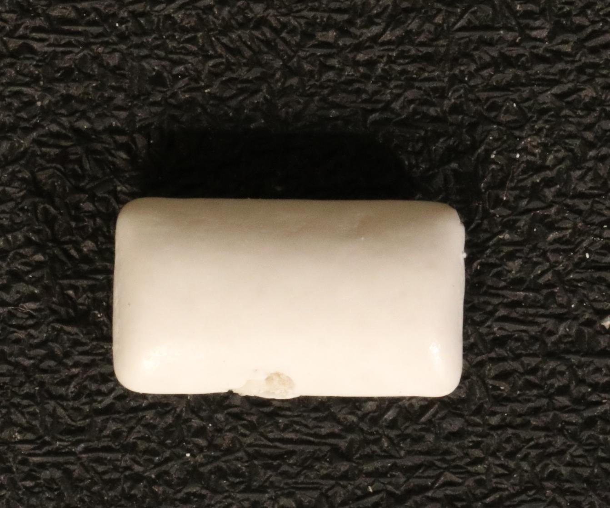
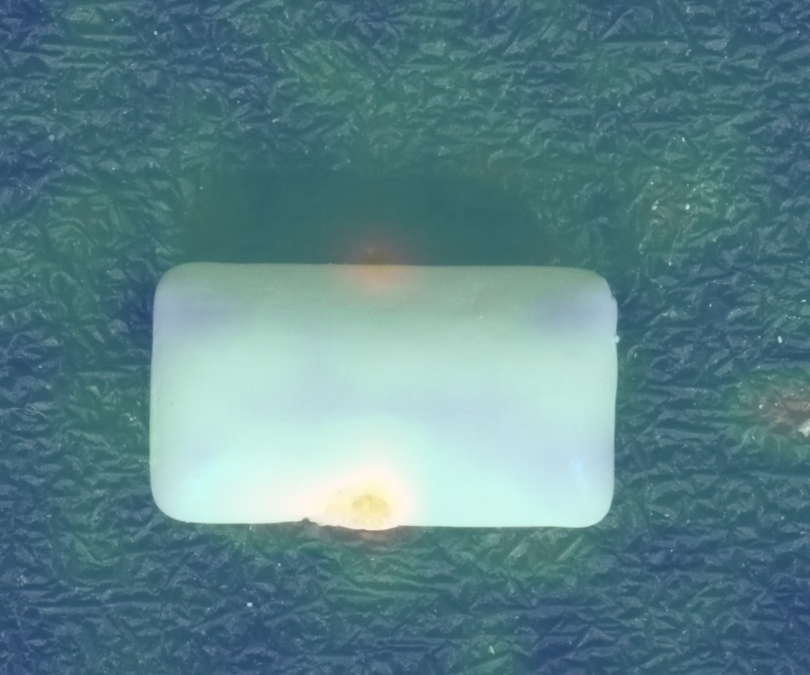

Previously measured VisA example. No live inference runs on this website.
VisA · Zou et al., ECCV 2022 · CC BY 4.0 · resized images and model overlay. Dataset source
| id | dcc3e255b90f466c9087d7e09af1a661 |
|---|---|
| created_at | 2026-10-16T05:04:09.469926+00:00 |
| category | chewinggum |
| verdict | Anomalous |
| score | 0.09018924832344055 |
| threshold | 0.06446045637130737 |
| uncertainty_margin | 0.003223022818565369 |
| inference_ms | 29.3 |
| model_id | dinov3-normal-bank-chewinggum-v1 |

